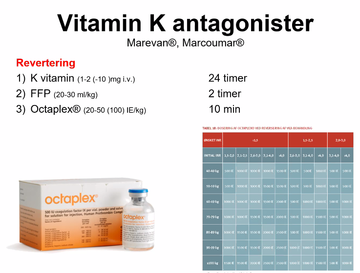

Akutte koagulationsforstyrrelser
Jakob siger velkommen
- Ansat i blodbanken
- Ansvarlig for RegH blødningsvagt
- Hvornår hvordan hvem i ringer til til sidst
- En fornøjelse at snakke om det
Case
- 30 år overvægtig kvinde med hjertebanken og rygsmerter ses i din modtagelse
- 3 dages anamnese, muligvis let feber (ikke målt) og almen utilpashed
- Disp ryger taget PP
- Exp : ingen rejser, veninde med feber
- Noget klattet, ikke oplagt feber, noget skid når man ser på hende.
- Breakout? Hvad kan hun fejle?
- Lungeemboli
- Pneumoni
- Aortadissektion?
- Pga rygsmerter
- AKS
- ??
- Arytmi?
- Ektopisk graviditet?
- Mavesår
- Diagnostik?
- ABCDE?
- A: fri
- B: SAT? lidt lav måse? 17-06-2020 13:23
- C: ok sys 96. pæne
- D: er med dig. neurologisk intakt. går omkring
- E: ikke febril.
- EKG
- Rtg thorax
- Biokemi
- D-dimer? Wells først?
- Infektionstal.
- A-gas
- Ekko: højresidig belastning pba LE.
- Obj: ømhed af hø. læg.
- UL af UE mhp. DVT?
- Så skal vi have en CT-angio af thorax
- Nu mistænker vi lungeemboli
- Der er 6 timers ventetid på CT-angio
- Behandlingsmæssig konsekvens?
- B: SAT nu 91%
- Behandling: Lav-molekylær heparin? Der går lidt før det virker
Case på engelsk?
30 yo obese female presents to the ER with back pain and SOB.
The patient also complains of heart palpitations. VS HR 105 BP 119/74 RR 20 Labs: WBC 15 D-Dimer 1766 (nl <229)
The patient takes birth control pills and she smokes 1/2 a ppd of cigarettes.
Der er også en UL af ben 17-06-2020 13:29 Så er der ekkokardiografi.
[TODO: Noget med behandlingen af lungeemboli]
Bare lige for at understøtte noget med tromber.. bla bla The patient had right ventricular dysfunction for several days and remained on inotropic SUT eler ge
She was extubated on POD 3 and was discharged on POD 10.
She made a full recovery.
Behandling af LE
- Trombolyse er krads behandling. Meget alvorlig behandling. Den skal brugs til de hypotensive, shock og hjertestop.
- Casen skal ikke have trombolyse i starten
- Skal have lidt heparin. Dalteparin?!
- Det vigtige her er: LMH.
- Cardio - Lungeemboli behandling.
- Pt har risikofaktorer: adipositas, p-piller, ryger.
- Snak med kardiologen i huset.
- Brug Wells score.
- Brug D-dimer
- CT-angio få det af-/bekræftet
Trombose
- Infarkt
- Stort media infarkt.
- Formentlig AFLI med tromber til hjernen.
- Trombose dannes et sted
- Embolien sendes afsted og sætter sig fast andet steds
- risikofaktorer: AFLI, sengeliggende, p-piller, overvægt, rygning.
balanceret hæmostase
17-06-2020 13:42
Så er der ironiske jokes. Dan nikker Crazy slide.
- Tag med: Det er EKSTREMT KOMPLEKST!
- Det er velafbalanceret
- Det kan holde til enormt meget.
- Det rebalancerer sig selv.
- Derfor går vi rundt selvom vi slår os eller bliver syge.
- Der skal være et par andre risikofaktorer der skal skubbe det ud af balance
- Crazy billede med blod uber alles.
- th. har vi koagulopati => ingen trombedannelse pis bløder
- tv. kan man se koagler.
- KIG på patienten
Case: 67 år med hoftefraktur
- Siveblødning ved CVK
- Spl er ikke tilfreds :(
Koagulopatisk blødning.
- HVad skal vi? 17-06-2020 13:50
- Ustabil => ABCDE?
- Hvorfor indlagt? Hvorfor CVK?
- Gamle blodprøver? Medicin? For høj dosis?
- DIC?
- Josefine: Vil vide mere
- Hvornår brækket hofte? dag 6 post-op, velmobiliseret, er pis træt af CVK
- Medicin?
- Har været i Xarelto. får
- Indikation for CVK?
- Rart at have?
- Seponere CVK
- Der skal bare komprimeres godt, så er det ikke problem med kaogulapati.
- Lidt koagulationstal.
- Om
- Koagulopatisk blødning.
- Om monitorering af AK-behandling
- INR og APTT kan man ikke bruge til DOAKs
- DOAKs er svære at monitorere.
- 17-06-2020 13:52 noget med heparin kunne ses med? [TODO: 17-06-2020 13:52 var det APTT-snak]
- I SKAL IKKE BRUGE APPT medmindre der er heparin involveret. (var det kun ufraktioneret hep?)
- INR er sparket til hjørne for nu.
Screning for blødningstendens
- INR
- God til MAreve
- 2,7,10
- Kan ikke bruges til så meget andet? [leverfunktion?]
- Trombocytter
- Godt, hvor mange der er. Ikke deres funktion
- APTT
- ufraktioneret heparin. Ikke påvirket af LMH
- Fibrinogen
- God måling. Der skal være fibrinogen til at lave fibrin-strenge.
- TEG/ROTEM
- I Jakob verden: KIG PÅ KOAGLERNE!.
- 17-06-2020 13:56
- Man skal have ret skæve forhold før man bløder
- Systemet er robust. Der skal meget til før det kaput.
- Isoleret INR kan man ikke bruge til så meget.
- Trombocytter skal ret langt ned (<40)
- Man skal mere tænke hvorfor har denne pt lave trombocytter?
PAUSE af 1. time
Startet 2. time 17-06-2020 14:10
TEG/ROTEM
- Fuldblodsanalyser
- Måler de viskoelastiske (fysiske) egenskaber af koaglet
- Global vurdering af klot opbygning og nedbrydning
- Realtids tests (15 min.)
- Hvis TEG/ROTEM normal => rent kirurgisk
- Hvis unormal, da en medicinsk årsag man måske kan korrigerer
- Svar inden for 15 min
- 17-06-2020 14:13
- Forskellige algoritmer.
- TEG/ROTEM reducerer dødelighed. 38 RCTs med i alt >2000 patienter.
RegH Blodbank - skulle være en lommekort. DSKI vejl.?
CASE
64 år mand med pneumoni indlagt i 1 uge
- Stigende O,-behov
- BT 91/46, P111, Laktat 3
- CRP 221, LEU 17 Hb 7,0 mmol/L Sygeplejeske bange for han bløder
17-06-2020 14:18 ABCDE gennemgang. talt
vågen og med
- Koldt når man rører ved misfarvninger
- Gør de ondt? Ja, iskæmiske smerter?
- Hvad sker der?
- DIC.
- 17-06-2020 14:21 purpura fulminans?
- Det her er den værste form for DIC.
- Systemet er kommer ud af kurs
- UDEN FOR KONTROL. MASSERE AF MIKROTROMBER
- VIL FORBRUGE KOAGULATIONSSYSTEM.
- Cefur i 1 uge. CRP stigende.
- Skal startes i sepsis behandling.
- Kontakt til bagvagt og intensiv.
- Smertedækkes med lidt morfika.
- 5 mg? PERFEKT. kan evt. gentages.
- SEPSIS behandling.
Spørgsmål
17-06-2020 14:24 Noget med hvad man skal kunne. tror ikke det var vigtigt.
Disseminated Intravascular Coagulation (DIC)
- Infektion/sepsis
- Shock (fx kardiel)
- Obstetrisk
- Malignitet
- Traume
- Organsvigt
- Lungeemboli
- Etc.
Hvis man ser mønsteret, så skal man være bekymret, især hvis klinisk skidt pt.
Behandling af DIC
- UDLØSENDE ÅRSAG!
- Symptomatisk - intensiver (konf BV)
- LMH fx tinza 4500 17-06-2020 14:29 i kan starte godt forløb.
- tinza 4500 ie el. dalte 5000 ie.
- det kan gøre lidt, men helt klart udløsende årsag. I skal starte forløbene rigtig godt.
- Få gjort noget. Snak bagud.
Case 72 år
72 år med GI blødning, AFLI og VKA
- Kaster blod op
- Taber sit BT 90/45. P 130.
- Marevan = VKA
- Kl. 6.30 i har fri kl. 8
- Hvad skal I gøre med denne pt?
- ABCDE - med treat as you go
- IV-adgange
- Ilt
- Type og BAS
- Lidt akut pakke blod kaldes.
- Væske i mellemtiden.
- Trendelenburg
- Bob, bob, han kaster op.
- NEJ, det gør vi ikke.
- Så får vi nok A-problemer.
- Lægge en sonde evt?
- Kaldt en kirurg og anæstesi.
- Akut gastroskopi.
- K-vitamin revertering
- Det taget 1 døgn før det virker, så det haster ikke.
- Octaplex - revertering. [TODO: HVad er dette Octaplex?]
- protrombinkomplekskoncentrat - skulle være pissedyrt.
- virker i løbet af 10 min
- godt at tænke ind i akutte fase.
- [TODO: snak om vejl. til revertering som Jakob har været med til at lave] *
- Målt INR
- evt. en TEG/ROTEM.
- A-gas?
- Hgb? NEJ, den er først påvirket når fortyndet.
- Laktat? Hvor skidt er det?
- Hvor hypoperfunderet.
- Acidose - så er han påvirket.
- Tranexamsyre? Ja, det kunne nok godt bruges.
- Truet luftvej?
- Pludselig GCS fald?
- Skal ikke være alene.
- ABCDE
- A: taler frit
- B: uden ilt.
- C: BT 90/45 P 130
- afli frekvens
facit!
Tidlig plasma Måle INR 3,7 Octaplex 2000 ie Kirurgi (G-skopi)
VKA revertering

- Snak med blødningsvagten - de ved en masse.
- Der er vejledninger. De skal risikovurdering - måske er blødning ikke det store problem, men tromboserisiko.
- Hvornår skal vi reverterer?
- Vigtigt at få monitoreret patienterne.
* Man kan se koaglerne 17-06-2020 14:46 * Pointen: Hvis man får givet octaplex / whatever, så kan blødning nemmere kontrolleres.
case lastbil
- 52 år lastbilschauffør fastklemt
- Taler — græder
- Trækker vejret OK — SAT 98%
- BT 844511 P100M
- Frigøres, load and go.… Hurtigt indtil jer. De er der om 9 min.
17-06-2020 14:48
- Anæstesi til luftveje
- Kir til abdomen
- Ortkir til knogler
- trukket medicin op
- akut pakke.
- IV-adgange
- TRAUME TEAM skal aktiveres.
- Det vi ved: Hvis de ikke kan danne kaogler, så dør de
- TRAUME pt skal ikkke have tyndevæsker.
Livstruende traume. de skal one to one to one.
TRaume skal have tranexamsyre 1 g oplagt til dise traumepatienter.
Tranexamsyre
- Kan bruges bredt til forsk typer
- TRaume
TXA do's
- Tidligst muligt TXA 1 g IV (15 mg/kg til børn under 40 kg) ved:
- Traume med mistænkt signifikant blødning
- Isoleret hovedtraume (TBI)
- Livstruende ekstrakraniel blødning uanset årsag
- Post Partum blødning
- GI blødning
- Alvorlig/livstruende ekstrakraniel blødning pga.
- antitrombotika
- Massiv ØNH og luftvejsblødning
- Intravenøst TXA kan suppleres med inhalation af 5 ml TXA gerne sammen med 2 ml adrenalin ved hæmoptyse
God evidens for ovenstående Vær opmærmsom for tromboemboli seneste 6 mdr.
TXA forsigtighed
- Aktiv trtomboemboli (indenfor < 6 mdr)
- DIC
- Spontane intrakranielle blødninger (se på CTC først og tal med din neurokirurg)
- SAH fx
- De kan ikke coile hvis de har fået TXA.
- SAH fx
Spørgsmål
- Som KBU-læge?
- 17-06-2020 14:54
- Hvis I er i tvivl, så snak bagud. *
TAKE HOME
- Blødningstendens - Klinisk og Paraklinisk ?
- (INR, APTT, TRC, Fibrinogen)
- Brug TEG/ROTEM
- (hvis tilrådighed) når plasma/TK transfusion overvejes
- Livstruende blødning
- 3:3:1 - 4:4:2
- TXA
- Antitrombotika og blødning
- Monitorer!
- Livstruende blødning > Reverter + 4:4:2 el lign
- Kend dine lokale ressourcer!
Dans gratis præparater / spørgsmål
- TXA er ikke hlet gratis. Kun ved livstruende blødning at det ligger langt fremme i skuffen. DET ER IKKE GRATIS.
- HVIS VI GAV det til jer 150, så ville et par stykker få tromboemboli.
- Morfinen til lav BT
- Kunne han få oxycodon vs morfin?
- Oxycodon skal ikke bruges
- Man bliver narkoman af det. Koster 5x så meget.
- Morfin er lige så godt
- Kunne han få oxycodon vs morfin?
- Hvor meget skal man vide om revertering?
- Ikke mere end at man kan slå op i vejledning
- og nok vide at man kan ringe til blødningsvagt.
- Hvor hurtigt tager man en TEG/ROTEM?
- TEG'en diagnostificere medicinsk blødning
- hvis det er oplagt kirurgisk blødning, så skal der en kirurg til
- Lige så snart man mistænker en medicinsk blødning.
- Den kører i 20 min. Så kan man se. Det kan man se i databasen.
- Nej vi skal ikke give alteplase. Kardiologerne må løbe! *